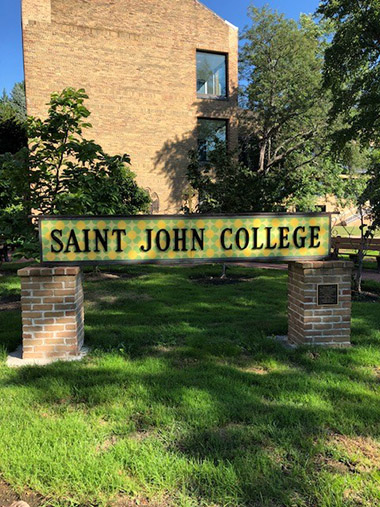
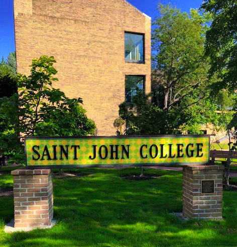
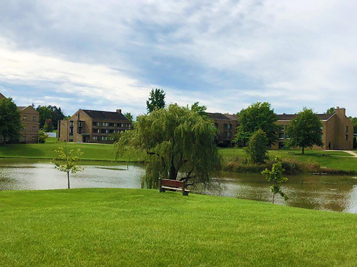
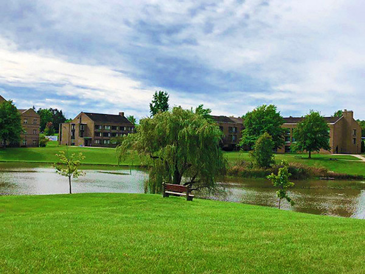

The photos taken for this project were taken with an iPhone 8 camera. The iPhone 8 camera specifications are 12MP, ƒ/1.8 aperture, and 5x digital zoom. I used the free 7 day trial of Adobe Photoshop on an Asus equipped with an i3 core processor.
Image #1 |
|
|---|---|
| Original | Edited |
This first image is of the Ursuline Quad. St. John College merged with Ursuline College in 1975. I edited the photo by cropping the original image and rotating it vertically. I then removed the shadows from the trees on the building by creating a layer and then using the clone stamp tool on the background image. I also use the clone stamp tool to fill in the brown and bare spots in the grass under the St. John College installation. After completing that, I wanted to brighten the picture so I used selective color to adjust the Green, Blue, Yellow, and Red levels in the photo. Lastly, I adjusted the vibrance +30 and saturation +20 on the image to give it an additional pop of color. After completing all of the alterations on the photo, I then saved the image for web use. Selective Color Adjustments for this photo are as follows: Green (Cyan -45, Magenta 0, Yellow 0, Black +20), Blue (Cyan 0, Magenta +80, Yellow 0, Black +14), Yellow (Cyan 0,Magenta 0, Yellow +20, Black 0), Red (Cyan 0, Magenta 0, Yellow -100, Black 0). The original image size 380x507. Edited image size 472x492. |
|
Image #2 |
|
| Original | Edited |
The second image is of Lake Elissa on the Ursuline Campus. For this image I sharped the image by creating a layer and then using highpass filter. This altered the image drastically so I then changed the lighting to high light and lowered the opacity to 50%. I then used selective color and adjusted Blue, Green, and White. This made subtle color changes to the grass and sky. Lastly, I increased the vibrance of the photo to 100% and adjusted the image size to 600x450. After completing all of the alterations on the photo, I then saved the image for web use. Selective Color Adjustments for this photo are as follows: Green (Cyan +55, Magenta -100, Yellow -30, Black +65), Blue (Cyan +100, Magenta +50, Yellow 0, Black +100), Whites (Cyan 0, Magenta 0, Yellow -20, Black +15). The original image size 700x525. Edited image size 600x450. |
|